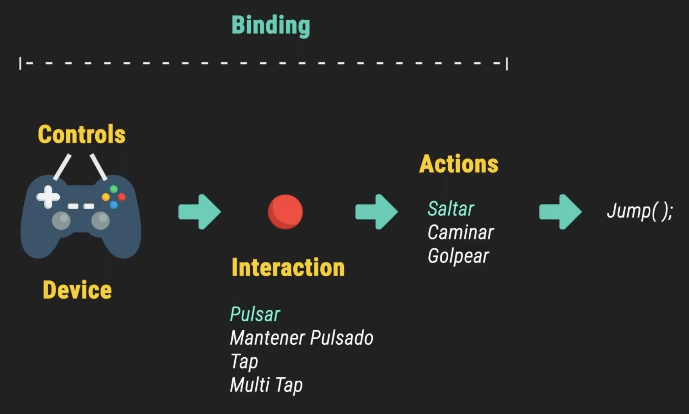
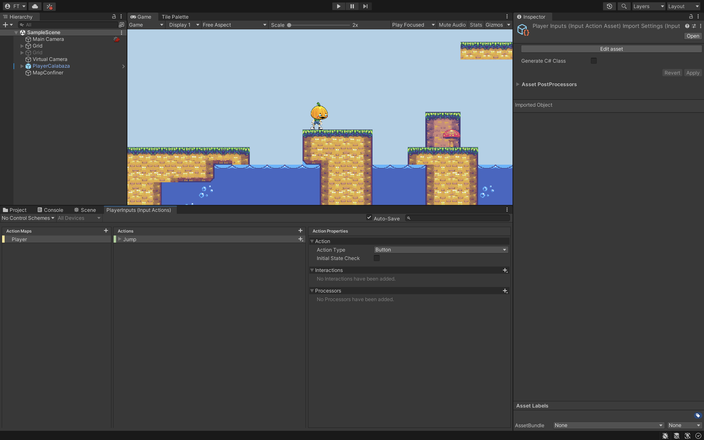
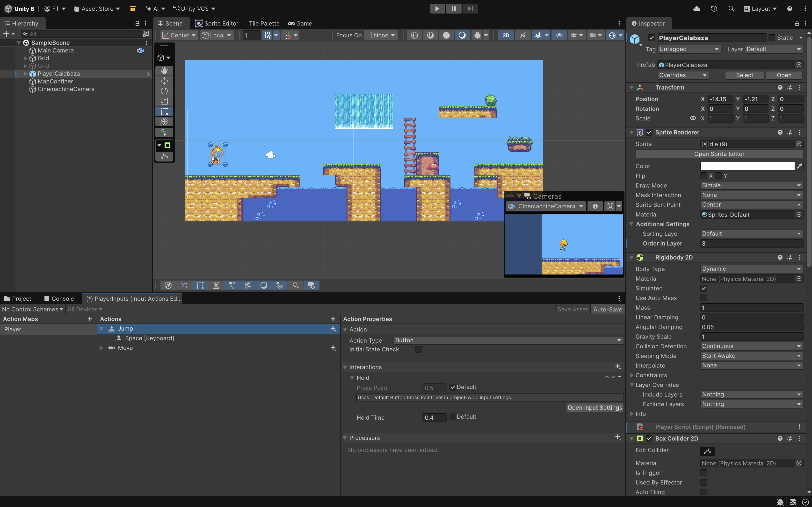
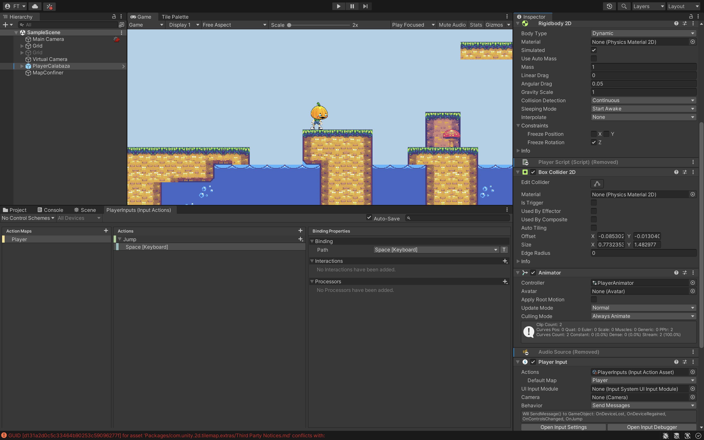
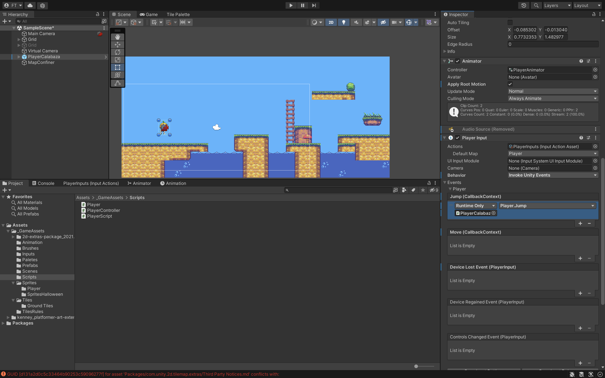

El Binding es un vínculo de un cierto control que está asociado a una determinada acción. Para que funcione habría que crear un binding que vincula el pulsado del botón del Gamepad con la acción de Saltar por ejemplo.

Con el Input System se trabajan con Eventos así que al activar un control se activará el Evento que
tendrá un método que se va a ejecutar.
El personaje necesitara el componente RigidBody porque se le aplicara movimiento a partir de físicas.
Instalar el Package Input System.
Pero si queremos dejar el antiguo, el nuevo o ambos podemos ir al Player Settings y modificarlo en Configuration/Active Input Handing.
• Crear carpeta de Inputs y crear un Input Actions. Lo renombramos a PlayerInputs.
• Damos doubleclick sobre PlayerInputs y abrira una ventana que la colocaremos donde nos
convenga.
• En Actions Maps damos al botón “+” y crearemos un mapa que lo llamaremos Player.
• Nos ha creado una Acción por defecto que llamaremos Jump.

Teniendo seleccionado Jump a la derecha si desplegamos Action Type nos aparecen 3 opciones:
• Value para cuando tengamos que hacer un seguimiento continuo del input como para el movimiento
del personaje que tenemos que estar chequeando continuamente el estado de los controles para saber a
dónde se tiene que mover.
• Button para botones donde se disparará una acción cada vez que es presionado.
• Pass Through cuando hay múltiples mandos conectados. (Más avanzado).
Para el Jump usaremos el Action Type Button.

Por defecto cuando se crea una acción se crea automaticamente un Binding. Se pueden crear los Bindings
que necesitemos. El Binding nos permite vincular un dispositivo fisico con una acción.
Asignar el Espacio con el Jump.

• Si tuviese un Script con el movimiento usando el Package Input Manager(old) tendriamos que
desactivarlo.
• Crear otro Script llamado Player.cs para poder usar el Input System Package(new) y no machacar
el anterior sistema por si tenemos que volver al Input anterior.
• Añadir un componente Player Input a nuestro Player. Y asignarle:
o PlayerInputs que hemos creado.
o Default Map será Player.
El Behaviour es la forma mandamos notificaciones cuando ocurren eventos de input como accionar un control
o conectar y desconectar un mando. Trabajaremos con Eventos de Unity.
Hay 3 eventos que se pueden disparar:
• Device Lost Even cuando se desconecta un mando.
• Device Regained Even cuando el dispositivo se vuelve a conectar.
• Controls Changed Event cuando hay un cambio de controles como pasar de teclado a gamepad o
viceversa.
También nos aparece dentro de Events/Player el evento Jump.
El Player tendrá un Script asignado Player.cs. En ese Script crear un Método Jump(). Tendremos que
asignar este Método al Player Input:
• Le damos al “+” y asignamos el Jump como hemos hecho alguna vez en los Canvas.

Cuando se modifica alguna Action del PlayerInputs puede ser que la referencia en Player Input no funcione. Habria que volver a seleccionarlo en Actions.
• Añadir librería UnityEngine InputSystem.
• Poner un print con la fase del movimiento (CallbackContext.phase). Cuando ejecuto y le doy al espacio me
aparece 3 veces eso y es porque el salto tiene 3 fases:
1º. Started Cuando se pulsa la tecla.
2º. Performed Cuando estamos apretando la tecla.
3º. Cancel Cuando soltamos la tecla.
Solo saltará cuando estemos en la fase Performed. Lo hará usando AddForce.
• Interacciones
o Seleccionar en Actions el Jump del PlayerInputs y al dar en "+" en interacciones
aparece una lista con:
- Hold (el que usaremos) mantener el botón apretado. Aparecen unas propiedades:
o Press Point en qué punto se considera que el botón esta apretado lo dejamos a Default.
o Hold Time es cuánto tiempo tenemos que mantener el botón para que se considere completa la
acción. Le ponemos 1.
- Multi Tap.
- Press.
- Slow Tap.
- Tap.
Vamos a crear una nueva acción que será el Movimiento.
• Move.
o Action Type ponemos Value.
o Control Type seleccionar Axis ya que trabajaremos sobre los ejes. (utilizaremos las flechas del teclado).
El Binding que hay por defecto no nos va a servir así que lo borramos ya que necesitamos mapear varias teclas.
Existe un Binding más específico para vincular 2 detecciones del movimiento así que le damos al “+” en Move
(Add Positive/Negative Binding)
Ahora podríamos añadirlo como el Espacio en el PlayerInput/Eventos/Player.
Probarlo, pero no funcionará bien:
• Crear un Método Move en el Script.
• Añadir este Método en Evento Move en el Player del Editor.
• Recoger el valor con input = callbackcontext.ReadValue y leemos un valor float.
• rb.AddForce(new Vector2(input , 0) * force).
Si lo probamos con la presión de la tecla solo lo hace una vez. O sea que si mantengo una tecla apretada no
seguirá moviéndose (como nos pasa con el Jump que queremos que lo haga solo una vez). Por eso no se puede
hacer disparando eventos.
Lo mejor es detectar el estado de los Inputs en el Update. Como lo hacíamos con el viejo Input Manager.
Copiaríamos lo que contiene el Move en el Update. Da error intentar arreglarlo:
• Necesitaremos una referencia al PlayerInput en el script (Update).
o input = playerInput.actions["Move"].ReadValue y leemos un valor float.
Las físicas sería mejor hacerlas en el FixedUpdate().
Quitar la llamada de Move en Eventos del PlayerInput del Player.
Le agregamos una fuerza AddForce con el input que recogemos en el Update. Los cambios de animación y la rotación lo haremos igual que en la anterior versión pero recogiendo el input que recogemos en el Update.